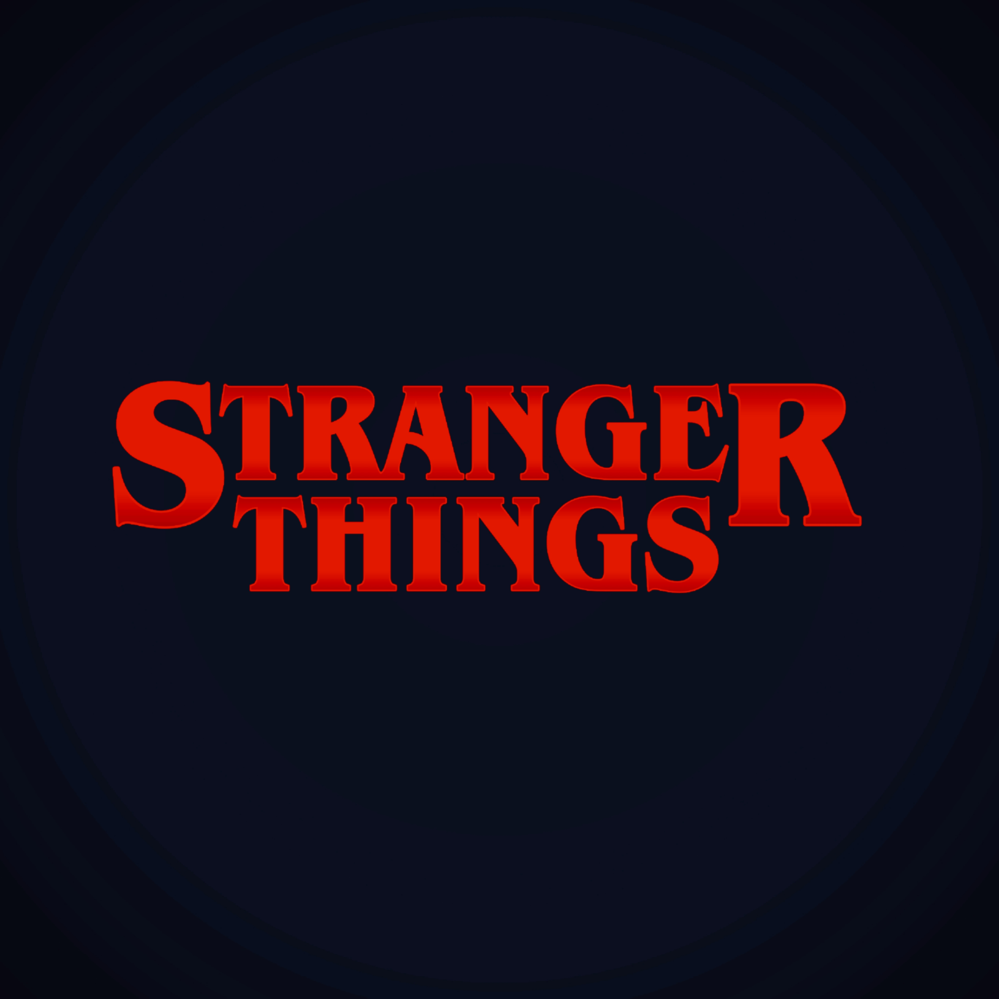

Projects

Smarter Lifts
- Increased workout tracking efficiency by 25% through a centralized platform combining exercise tracking, meal planning, and progress monitoring.
- Designed an algorithm to analyze user data and provide real-time workout suggestions.
- Utilized PostgreSQL to manage user data such as exercises, calories, and weight tracking.
- Created 5 RESTful API endpoints using Express.js to support backend functionality.
Connect 4 Game
- A classic Connect Four game implemented in C, featuring a two-player mode with a text-based interface.

Stranger Things Quote Generator & Character Wiki
- Developed a JavaFX-based app that retrieves and displays random quotes from Stranger Things via a REST API.
- Integrated a character info feature, displaying facts about the character behind the quote.